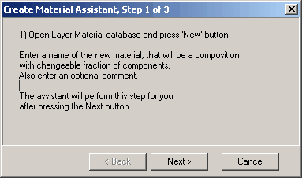
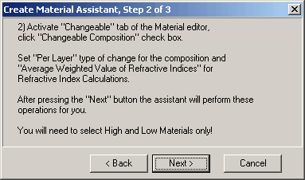
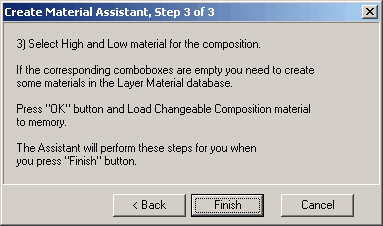

Create Material Assistant
Create Material Assistant
Navigation: OptiLayer Menu Commands > Analysis Menu > Rugates >
Create Material Assistant
` <rugates.html>`__ ` <rugates.html>`__ ` <idh_plot_engine.html>`__
Create Material Assistant is invoked from Rugates option of Analysis menu.
Following directions of Material Assistant is convenient alternative to manual creation of Changeable Composite Material required for rugate-type coating description.

The first step helps to create a new database entry.

The second step helps to set necessary Composite Material options.

The third step helps to select High and Low materials describing limits of refractive index and to load obtained material to memory.
After finishing the Material Assistant new material can be accessed in the Material entry field of the Rugates option.